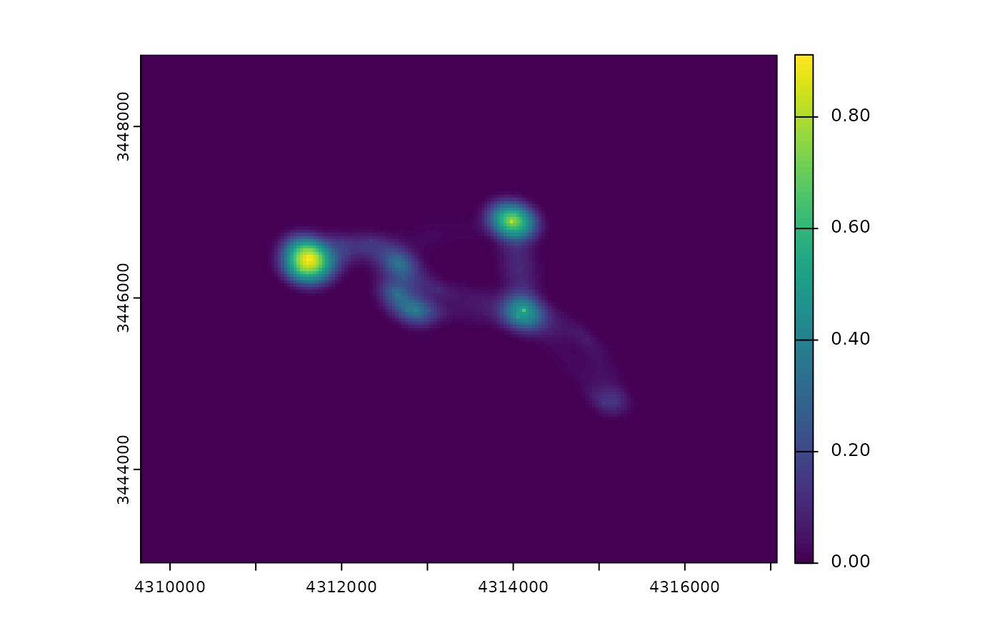

od is a wrapper around ctmm::occurrence. See help(ctmm::occurrence) for more details. rolling_od estimates occurrence distributions for a subset of a track.
[track_xyt]
A track created with make_track that includes time.
Further arguments, none implemented.
[SpatRaster]
A template raster for the extent and resolution of the result.
[An output of fit_ctmm]
The autocorrelation model that should be fit to the data. bm corresponds to Brownian motion, ou to an Ornstein-Uhlenbeck process, ouf to an Ornstein-Uhlenbeck forage process.
[numeric(1)=10]
Number of grid point along each axis, relative to the average diffusion (per median timestep) from a stationary point. See also help(ctmm::occurrence).
[numeric(1)=10]
Number of temporal grid points per median timestep.
[numeric(1)=5]
This argument is only relevant for rolling_od and specifies the window size for the od estimation.
[logical(1)=TRUE]
Indicates if a progress bar is used.
Fleming, C. H., Fagan, W. F., Mueller, T., Olson, K. A., Leimgruber, P., & Calabrese, J. M. (2016). Estimating where and how animals travel: an optimal framework for path reconstruction from autocorrelated tracking data. Ecology.
# \donttest{
data(deer)
mini_deer <- deer[1:100, ]
trast <- make_trast(mini_deer)
md <- od(mini_deer, trast = trast)
terra::plot(md)

# rolling ud
xx <- rolling_od(mini_deer, trast)
#>
|
| | 0%
|
|= | 1%
|
|= | 2%
|
|== | 3%
|
|=== | 4%
|
|==== | 5%
|
|==== | 6%
|
|===== | 7%
|
|====== | 9%
|
|======= | 10%
|
|======= | 11%
|
|======== | 12%
|
|========= | 13%
|
|========== | 14%
|
|========== | 15%
|
|=========== | 16%
|
|============ | 17%
|
|============= | 18%
|
|============= | 19%
|
|============== | 20%
|
|=============== | 21%
|
|================ | 22%
|
|================ | 23%
|
|================= | 24%
|
|================== | 26%
|
|=================== | 27%
|
|=================== | 28%
|
|==================== | 29%
|
|===================== | 30%
|
|====================== | 31%
|
|====================== | 32%
|
|======================= | 33%
|
|======================== | 34%
|
|========================= | 35%
|
|========================= | 36%
|
|========================== | 37%
|
|=========================== | 38%
|
|============================ | 39%
|
|============================ | 40%
|
|============================= | 41%
|
|============================== | 43%
|
|=============================== | 44%
|
|=============================== | 45%
|
|================================ | 46%
|
|================================= | 47%
|
|================================== | 48%
|
|================================== | 49%
|
|=================================== | 50%
|
|==================================== | 51%
|
|==================================== | 52%
|
|===================================== | 53%
|
|====================================== | 54%
|
|======================================= | 55%
|
|======================================= | 56%
|
|======================================== | 57%
|
|========================================= | 59%
|
|========================================== | 60%
|
|========================================== | 61%
|
|=========================================== | 62%
|
|============================================ | 63%
|
|============================================= | 64%
|
|============================================= | 65%
|
|============================================== | 66%
|
|=============================================== | 67%
|
|================================================ | 68%
|
|================================================ | 69%
|
|================================================= | 70%
|
|================================================== | 71%
|
|=================================================== | 72%
|
|=================================================== | 73%
|
|==================================================== | 74%
|
|===================================================== | 76%
|
|====================================================== | 77%
|
|====================================================== | 78%
|
|======================================================= | 79%
|
|======================================================== | 80%
|
|========================================================= | 81%
|
|========================================================= | 82%
|
|========================================================== | 83%
|
|=========================================================== | 84%
|
|============================================================ | 85%
|
|============================================================ | 86%
|
|============================================================= | 87%
|
|============================================================== | 88%
|
|=============================================================== | 89%
|
|=============================================================== | 90%
|
|================================================================ | 91%
|
|================================================================= | 93%
|
|================================================================== | 94%
|
|================================================================== | 95%
|
|=================================================================== | 96%
|
|==================================================================== | 97%
|
|===================================================================== | 98%
|
|===================================================================== | 99%
|
|======================================================================| 100%
# }